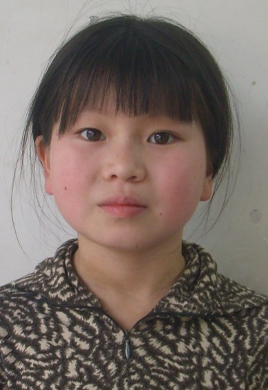
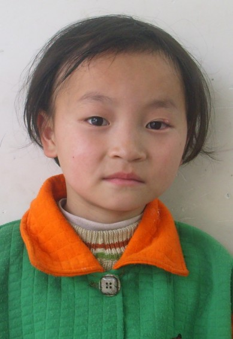

善良的河，悲悯的心
霜雕红叶
2013年10月21日
我认识一对夫妇好友，7年前他们开始申请领养国内的孤儿。 不曾想申请的过程极其繁琐，在漫长的等待中他们有了自己的第二个孩子。 所有的冲动，热情，盼望，也伴随着等待而消磨殆尽， 剩下的只是理智和坚持了。 这期间，我和几位朋友还时不时地将各种可能的困难摆在他们面前。 让我敬佩的是，他们俩一直没有放弃，始终怀着一颗悲悯的心，行驶在这条善良的河流里。我曾经问他们， ”为什么一定要收养一个孩子？“ 他们告诉我，“每一次打开那个收养孩子的网站，就会流泪。 总感觉在那遥远的县城里，有一个无助的孩子在等着我们， 欲罢不能。” 听罢，我不禁叹息：”人为什么会有悲悯之心呢？ 她是从哪里来的呢？她怎么就会让一颗幼小的心灵去牵动另一颗远隔万里的心灵呢？ 她又怎么能让那柔弱的心痛苦和流泪呢？“
去年三月他们从河南接回了患有严重兔唇的两岁的女儿， 当时他们的儿子才两岁半。 每每聚会时，总见着做父亲的左手抱着女儿，右手托着儿子，我们却什么忙也帮不上。 上个礼拜又见到了他们其乐融融的五口之家，小女儿的眼神中不再有恐惧和焦虑， 那乖巧，开心的模样实在是让人怜爱。
前不久，我需要看眼科医师， 朋友向我推荐了 Costco 的 Dr. Lee 。 在 Dr. Lee 的验光室内，我看见一张相片，相片上是两个露出灿烂笑容的中国女孩。 我有些诧异，问她：“这两个女孩是谁?” Dr. Lee 一脸的自豪：“我领养的女儿，一个来自江西，一个来自广东。” 然后她开始如数家珍地告诉我她的女儿如何如何优秀，多么多么善良。 我不禁对她说：”谢谢你，你改变了她们的命运。“ 谁知Dr. Lee 说：”不，是我要谢谢她们，她们改变了我的命运。 你不知道，自从有了她们，我有多快乐。“ 我又一次的感叹，拥有一颗悲悯之心的人是多么的幸运，她不一定济世，但却带有光泽，温柔而动情，传达着眼泪和微笑，体恤和宽广。 感谢上天，让我的心中还保存着一份柔软。 每当在电视上看见那些边远山区光着脚丫、蹲在门前的石头上喝着稀粥的失学儿童， 我不会认为那仅仅是一场秀，我也无法去遏制心中漾起的忧伤和悲悯，同情和哀戚。
令我感到骄傲的是,在我们亚特兰大华人身边,也活跃着一大批富有爱心的朋友和一个积极为帮助中国的贫困孩子完成学业牵线搭桥的慈善组织: “美中下一代教育基金会”. 从2009年起,他们经过四年坚持不懈的努力,已经陆陆续续地向四川、青海、天津、云南、河南、广西、贵州、和江苏的109名学生提供了一次性资助。2013年，他们开始拓展了一个 “长期资助孩子“ 的项目。首批入选的13位长期资助的学生是在以往得到过美中下一代教育基金会一次性资助的孩子中挑选的.基金会志愿者为了找寻和核实这些孩子的最新情况，花费了不少时间和心思。许多孩子现今所处的境遇令志愿者们震惊和心痛.下图中的2个孩子原来是跟祖父母一起生活的， 现在祖父母去世了， 他们成了孤儿， 不得不寄养在亲戚家，也没有电话 -----志愿者们只能顺着老师同学提供的线索， 一次次的打电话， 直到找到他们现在的联系方法。
|  |  |
彭芙蓉，2000年2月生，女，巴中市巴州区玉山镇中心小学。开学后升初中。
班主任推荐意见：该生品学兼优。但家庭生活实属困难，姐妹两人读书，父亲患有严重的精神病，母亲因父亲生病离家出走，没有音讯。 靠年近80的祖母一人劳作维持一家仁的生活和供姐妹2人读书。
长期资助者： 段颖哲，基金会负责人： 潘玲。
彭英华，2003年4月生，女，巴中市巴州区玉山镇中心小学。
班主任推荐意见：该生热爱祖国，团结同学，待人诚恳，对人有礼貌，学习成绩优异。因家中父亲长期患有精神病，生活不能自理，姐妹2人读书，母亲离家出走多年， 家中靠年迈的祖母劳动，生活相当困难。彭英华是彭芙蓉的妹妹。
长期资助者： 段颖哲，基金会负责人： 潘玲。
这是志愿者拍摄的当地学生住校的条件

|
很高兴地听到这13个孩子已经全部被富有爱心的志愿者们认领并保证他(她)们可以顺利地完成高中教育。
美中下一代教育基金会在总结第一批长期工作经验的基础上目前正在筹备2014年的长期资助项目。如果你的心中闪过这样的一份感动，请不要错过她, 将你的悲悯之心投射出去，让远方的那个无助的孩子能接受到你和你的孩子给予的温暖和爱意。给那个孩子写封信或打个电话，送去你的鼓励。 让孩子们成长的每一天都在爱中行走。
愿悲悯流淌成河, 愿生活更加辽阔！
如何资助？ 长期资助者承诺向每个长期资助学生每年提供$300美元资助， 直到受助的孩子高中毕业。 长期资助者因为个人原因在被资助学生学习期间难以继续提供资金,应提前三个月正式通知基金会.以便基金会安排新的长期资助者接替.
“ 美中下一代教育基金会”是一个经过IRS注册批准的501(C)(3)的非盈利机构，它的首要目的是帮助中国大陆地区贫困但是优秀的学生完成基础教育。基金会由28位华人社区的普通朋友们发起。在这里，没有重要会员，没有领导会员，只有负责任的志愿者。
以下是基金会的网页和联系方式。
http://www.fornextgen.org/longterm.html
longtermsupport@fornextgen.org
| 2013 长期资助捐助人名單 | |
|---|---|
| 学生姓名 | 捐助人姓名 |
| 董珀均 | 段颖哲 |
| 李志宽 | 段颖哲 |
| 赵智华 | 段颖哲 |
| 彭英华 | 段颖哲 |
| 彭芙蓉 | 段颖哲 |
| 岳 阳 | 古永生 |
| 彭 月 | Melissa Li |
| 陈心岭 | 莫干/海平 |
| 邓俊芝 | 刘菲菲 |
| 贾 玲 | 杨春荣 |
| 李 星 | 高宏 |
| 朱春玲 | 张洪波 |
| 梅婷婷 | 刘雯 |